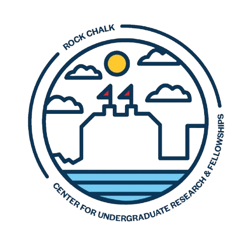

About
The Kansas Research Collective (KRC) is a multidisciplinary research collective built for and by Kansas students. While the Kansas Research Collective is hosted by the University of Kansas’ Lawrence Campus and operates in close collaboration with its Center for Undergraduate Research & Fellowships (CURF), we are committed to serving all students in the state of Kansas and welcome those from other institutions.

✕